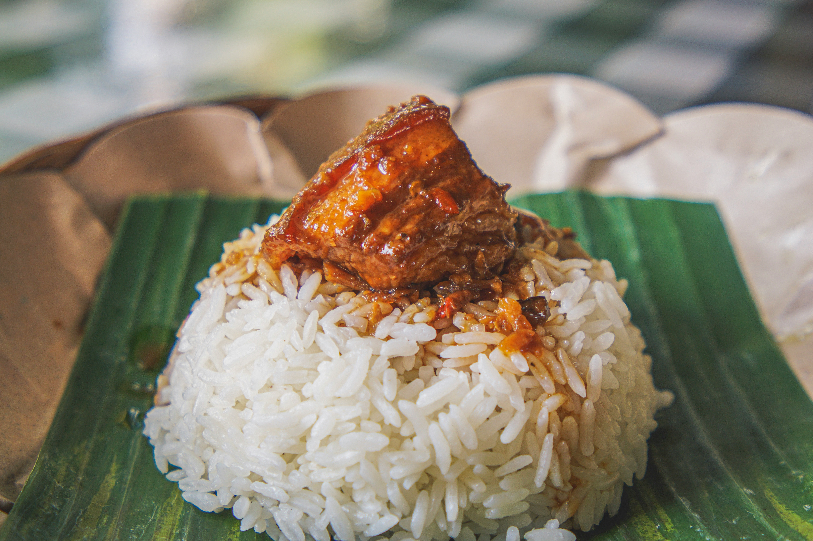

HEALTHY AFRICAN CUISINES
Freshly made chapati served with stew.Freshly made steak served with mashed potatoes.

Freshly made chapati served with stew.Freshly made chapati served with stew.Freshly made chapati served with stew.Freshly made chapati served with stew.Freshly made chapati served with stew.Freshly made chapati served with stew.Freshly made chapati served with stew.Freshly made chapati served with stew.Freshly made chapati served with stew.